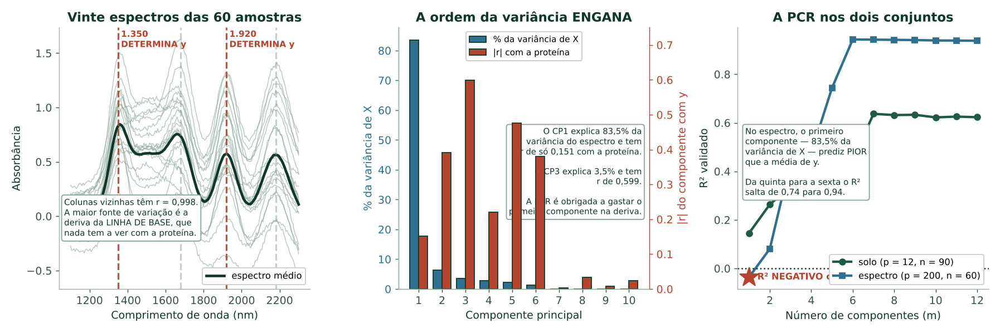
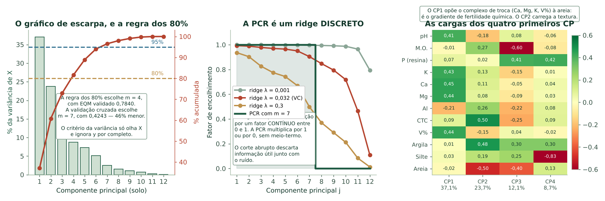

Regressão por componentes principais (PCR)
Substitui as candidatas por componentes principais ortogonais e regride nos m primeiros — eliminando a colinearidade, ao preço de escolher os componentes sem olhar a resposta.
Comece por aqui
A regressão por componentes principais faz duas coisas em sequência: primeiro substitui as \(p\) variáveis candidatas por \(m\) combinações lineares ortogonais delas — os componentes principais — e depois ajusta mínimos quadrados nesses \(m\) componentes. A colinearidade desaparece por construção, porque os componentes são ortogonais. Em troca, surge um problema novo e menos óbvio: os componentes são escolhidos olhando apenas X, sem olhar y.
No conjunto espectral, o primeiro componente principal carrega 83,54% da variância das 200 colunas e tem correlação de apenas 0,151 com a resposta. Uma PCR com um componente tem \(R^2\) validado negativo — prediz pior que a média de \(y\). O terceiro componente carrega 3,49% da variância e tem correlação de 0,599. A ordem da variância em X não é a ordem da relevância para y, e essa é a limitação estrutural do método.
O que é a PCR
Os componentes principais de \(X\) são as direções de maior variância, obtidas da decomposição em valores singulares \(X=UDV^{\top}\). O \(j\)-ésimo escore é \(t_j=Xv_j\), com variância proporcional a \(d_j^2\), e os escores são mutuamente ortogonais. A PCR regride \(y\) nos \(m\) primeiros e devolve os coeficientes à escala original por \(\hat\beta=V_m\hat\gamma\).

| CP | Valor singular d | % da variância de X | % acumulada | |r| com y |
|---|---|---|---|---|
| 1 | 19,901 | 37,08 | 37,08 | 0,4204 |
| 2 | 15,914 | 23,71 | 60,80 | 0,3626 |
| 3 | 11,353 | 12,07 | 72,87 | 0,2939 |
| 4 | 9,640 | 8,70 | 81,57 | 0,0772 |
| 5 | 8,846 | 7,33 | 88,89 | 0,2848 |
| 6 | 7,403 | 5,13 | 94,03 | 0,2161 |
| 7 | 5,179 | 2,51 | 96,54 | 0,4103 |
| 8 | 3,982 | 1,48 | 98,02 | 0,0512 |
| 9 | 3,323 | 1,03 | 99,06 | 0,0821 |
| 10 | 2,694 | 0,68 | 99,74 | 0,0128 |
| 11 | 1,573 | 0,23 | 99,97 | 0,1099 |
| 12 | 0,589 | 0,03 | 100,00 | 0,0571 |
Ordenados por variância em X: CP1, CP2, CP3, CP4, …, CP12. Ordenados por relevância para y: CP1, CP7, CP2, CP3, CP5, CP6, CP11, CP9, CP4, CP12, CP8, CP10. O sétimo componente, que carrega apenas 2,51% da variância das candidatas, é o segundo mais correlacionado com a produtividade.
Os componentes são ortogonais, de modo que o fator de inflação de variância de cada um é exatamente 1 — contra VIF de até 126 nas variáveis originais. É a primeira virtude do método, e é incondicional.
Pressupostos e como verificá-los
| Pressuposto | Por que importa | Como verificar |
|---|---|---|
| Variáveis padronizadas | Componentes de dados não padronizados seguem a variável de maior escala. | scale = TRUE no pacote pls. |
| m escolhido por validação cruzada | A regra da variância explicada ignora y. | validation = "CV"; veja a tabela desta ficha. |
| Relevância alinhada com variância | É o pressuposto IMPLÍCITO e frequentemente falso. | Correlação de cada componente com y. |
| Linearidade na média | A PCR é um modelo linear. | Resíduos contra ajustados. |
| Erros com variância constante | Caso contrário, use mínimos quadrados ponderados. | Teste de homocedasticidade. |
| Observações independentes | A validação cruzada pressupõe isso. | Com agrupamento, valide por grupo. |
| Não se espera seleção de variáveis | Todas as p continuam no modelo. | Use lasso se precisar selecionar. |
| Interpretação das cargas apresentada como tal | Ler cargas é interpretação, não resultado. | Diga isso no texto. |
A PCR só é uma boa ideia se as direções de maior variância em \(X\) forem também as mais relacionadas com \(y\). Esse pressuposto não é testável antes de olhar \(y\) — e quando se olha \(y\) para escolher os componentes, já não se está fazendo PCR, e sim PLS. No conjunto de solo o pressuposto vale razoavelmente; no espectro ele falha de forma clara. A verificação prática é a tabela de correlações de cada componente com \(y\): se ela não decresce com \(j\), a PCR está em desvantagem.
Formulação e cálculo
Em que:
- \(U\)
- matriz \(n\times p\) dos vetores singulares à esquerda
- \(D\)
- diagonal dos valores singulares \(d_1\ge\dots\ge d_p\)
- \(V\)
- matriz \(p\times p\) dos vetores singulares à direita: as CARGAS
- \(T_m\)
- as \(m\) primeiras colunas de \(T\): os ESCORES
- \(\hat\gamma\)
- coeficientes na escala dos componentes
- \(\hat\beta^{\text{PCR}}\)
- coeficientes de volta na escala das variáveis
Como \(T_m^{\top}T_m\) é diagonal, cada \(\hat\gamma_j=t_j^{\top}y/d_j^2\) é calculado independentemente dos demais — acrescentar um componente não altera os coeficientes dos anteriores. Essa propriedade é exclusiva de bases ortogonais, e é o que torna a PCR um caminho limpo de regularização.
A relação com o ridge
A fórmula põe os dois métodos lado a lado: ambos encolhem direções principais, o ridge de forma contínua e a PCR de forma abrupta. A PCR é, nesse sentido, o ridge levado ao limite — e a comparação explica por que o ridge costuma ser preferível: o corte abrupto descarta informação útil junto com o ruído.
Exemplo numérico, passo a passo
| CP | d | Ridge (λ = 0,032) | PCR (m = 5) | PCR (m = 7) |
|---|---|---|---|---|
| 1 | 19,901 | 0,9929 | 1 | 1 |
| 2 | 15,914 | 0,9889 | 1 | 1 |
| 3 | 11,353 | 0,9784 | 1 | 1 |
| 4 | 9,640 | 0,9703 | 1 | 1 |
| 5 | 8,846 | 0,9649 | 1 | 1 |
| 6 | 7,403 | 0,9506 | 0 | 1 |
| 7 | 5,179 | 0,9041 | 0 | 1 |
| 8 | 3,982 | 0,8479 | 0 | 0 |
| 9 | 3,323 | 0,7951 | 0 | 0 |
| 10 | 2,694 | 0,7183 | 0 | 0 |
| 11 | 1,573 | 0,4651 | 0 | 0 |
| 12 | 0,589 | 0,1087 | 0 | 0 |
Quando \(m=p\), \(V_m=V\) é ortogonal completa e \(\hat\beta^{\text{PCR}}=V\hat\gamma=V(T^{\top}T)^{-1}T^{\top}y=\hat\beta^{\text{MQO}}\). Nos dados de solo, a maior diferença entre os doze coeficientes calculados pelos dois caminhos é de 0,0000000000 — identidade algébrica, verificada numericamente.
A consequência conceitual importa: a PCR, como o ridge e o lasso, é um caminho entre o modelo nulo (\(m=0\), só a média) e os mínimos quadrados (\(m=p\)). Escolher \(m\) é escolher o grau de regularização, e nada mais. Não existe "a PCR" como modelo: existe a PCR com \(m\) componentes.
Propriedades
- Os componentes são ortogonais: o VIF de cada um é exatamente 1.
- Os coeficientes \(\hat\gamma_j\) são independentes entre si; acrescentar um componente não altera os demais.
- \(m=p\) devolve o MQO; \(m=0\) devolve a média de \(y\).
- Equivale ao ridge com fator de encolhimento 1 ou 0 em vez de contínuo.
- Não seleciona variáveis: todas as \(p\) recebem coeficiente não nulo.
- Os componentes dependem só de \(X\): são os mesmos qualquer que seja a resposta.
- Funciona com \(p>n\), porque usa no máximo \(\min(n-1,p)\) componentes.
- Depende da escala: exige padronização quando as unidades diferem.
Como interpretar os resultados
| Elemento | O que informa | Cuidado |
|---|---|---|
| Gráfico de escarpa (scree) | A variância de cada componente. | Não diz nada sobre y. |
| % acumulada da variância de X | Quanto de X os m componentes retêm. | Mau critério para escolher m. |
summary(mp) — % variance explained | Duas linhas: X e y. | Compare as duas: elas divergem. |
RMSEP e validationplot | O erro validado por m. | É o critério correto. |
coef(mp, ncomp = m) | Coeficientes na escala original. | Nenhum é zero. |
| Cargas (matriz V) | A composição de cada componente. | Interpretação, não resultado estatístico. |
| Escores (matriz T) | A posição de cada observação. | Úteis para detectar observações atípicas. |
Por que a regra dos 80% é um mau critério
| Critério | m escolhido | EQM validado |
|---|---|---|
| 70% da variância de X | 3 | 0,7662 |
| 80% da variância de X | 4 | 0,7840 |
| 90% da variância de X | 6 | 0,6481 |
| 95% da variância de X | 7 | 0,4243 |
| Validação cruzada | 7 | 0,4243 |
A regra dos 80% escolhe \(m=4\) e um erro de 0,7840, contra 0,4243 da validação cruzada — 46% maior. Note, porém, que a regra dos 95% escolhe o mesmo \(m=7\) da validação cruzada: ela acertou, por coincidência destes dados. A objeção ao critério da variância explicada não é que ele erre sempre, é que ele não tem como saber — olha apenas \(X\). Num conjunto em que o sinal esteja no quarto componente, qualquer limiar de variância pode acertar ou errar por acidente. A validação cruzada custa pouco e responde à pergunta certa.
Como executar no R e em Python
Onde executar o código em Python
Não é preciso instalar nada: o Google Colab é um computador na nuvem, gratuito, que executa Python pelo navegador e já traz as bibliotecas usadas aqui (numpy, scipy e matplotlib).
O pacote pls traz a função pcr com a mesma interface de fórmula do lm. scale = TRUE padroniza as colunas, o que é necessário quando as unidades diferem; validation = "CV" com segments = 10 faz a validação cruzada de dez dobras durante o ajuste. summary() imprime duas linhas de variância explicada — uma para \(X\) e outra para \(y\) — e a comparação entre elas é o diagnóstico central desta ficha. validationplot(mp, val.type = "MSEP") desenha a curva do erro validado por número de componentes, e RMSEP(mp) dá os valores. Os coeficientes de um \(m\) específico saem de coef(mp, ncomp = m), já na escala das variáveis originais. Os escores e as cargas ficam em scores(mp) e loadings(mp). Para apenas obter os componentes, prcomp do R base basta.
library(pls)
mp <- pcr(y ~ ., data = solo, scale = TRUE, validation = "CV", segments = 10)
summary(mp) # compare as duas linhas de variância explicada
validationplot(mp, val.type = "MSEP")
coef(mp, ncomp = 7)
Exemplo de aplicação
Contexto dos dados
Os dados são fictícios e foram criados pelo autor: 90 amostras de solo de uma área experimental, com a produtividade da cultura (t/ha) e doze variáveis candidatas de análise de rotina — pH, matéria orgânica, fósforo resina, potássio, cálcio, magnésio, alumínio, CTC, saturação por bases (V%), argila, silte e areia. O processo gerador é conhecido e usa apenas quatro delas: matéria orgânica, fósforo, V% e argila, com erro de desvio-padrão 0,60 t/ha. A colinearidade é deliberada e realista: argila, silte e areia somam aproximadamente 100% por construção física, e cálcio, magnésio e potássio estão ligados à CTC e ao V%. Saber qual é o modelo verdadeiro permite verificar se cada método o encontra — o que, em dados reais, nunca é possível. O mesmo conjunto atravessa as seis fichas do grupo.
O segundo conjunto, também fictício, é um espectro de reflectância no infravermelho próximo: 60 amostras, 200 comprimentos de onda entre 1.100 e 2.300 nm, e o teor de proteína (%) como resposta. Quatro bandas de absorção foram construídas, mas apenas duas determinam a proteína; a maior fonte de variação do espectro é uma deriva de linha de base sem relação com ela. Aqui p > n, e os métodos clássicos de seleção deixam de ser aplicáveis.
Código em R
# Regressão por componentes principais (PCR): exemplo completo ----
# Pacotes: pls (função pcr)
# Dados fictícios: 90 amostras de solo, 12 candidatas.
# O arquivo solo.csv acompanha o site, na pasta scripts/.
solo <- read.csv("solo.csv")
str(solo) # y (t/ha) e as 12 candidatas
dim(solo)
# O modelo VERDADEIRO (conhecido por construção) usa só quatro:
# y = 4,00 + 0,80*mo + 0,0250*pres + 0,0300*v + 0,0200*argila + erro
cand <- c("ph","mo","pres","k","ca","mg","al","ctc","v","argila","silte","areia")
verdadeiras <- c("mo","pres","v","argila")
# A colinearidade, que é o problema central do grupo
library(car)
vif(lm(y ~ ., data = solo))
round(cor(solo[, cand]), 2)
# ---- 1. Os componentes principais
Xp <- scale(as.matrix(solo[, cand]))
sv <- svd(Xp)
pv <- sv$d^2/sum(sv$d^2) # proporção da variância de X
Tm <- sv$u %*% diag(sv$d) # os escores
data.frame(CP = 1:12, d = round(sv$d, 3),
var_pct = round(100*pv, 2), acum = round(100*cumsum(pv), 2),
r_com_y = round(abs(cor(Tm, solo$y)), 4))
# Os componentes são ORTOGONAIS: todo VIF é exatamente 1.
round(cor(Tm[, 1:4]), 10)
# ---- 2. A PCR com o pacote pls
library(pls)
mp <- pcr(y ~ ., data = solo, scale = TRUE, validation = "CV", segments = 10)
summary(mp)
validationplot(mp, val.type = "MSEP")
RMSEP(mp)
# O m escolhido:
which.min(RMSEP(mp)$val[1, 1, -1])
coef(mp, ncomp = 7) # na escala das variáveis originais
# ---- 3. A REGRA DOS "80% DA VARIÂNCIA" É UM MAU CRITÉRIO
for (alvo in c(0.70, 0.80, 0.90, 0.95)) {
m <- which(cumsum(pv) >= alvo)[1]
cat(sprintf("%2.0f%% da variância -> m = %d\n", 100*alvo, m))
}
# O critério só olha X e ignora y por completo. Use validação cruzada.
# ---- 4. PCR com m = p é EXATAMENTE o MQO
max(abs(coef(pcr(y ~ ., data = solo, scale = TRUE), ncomp = 12) -
coef(lm(y ~ ., data = solo))[-1]*apply(solo[, cand], 2, sd)))
# ---- 5. O caso em que a ordem da variância ENGANA: p > n
# Dados fictícios: espectro NIR, 60 amostras, 200 comprimentos de onda.
# O arquivo espectro.csv acompanha o site, na pasta scripts/.
esp <- read.csv("espectro.csv")
dim(esp) # 60 x 201: proteina + nm1100 ... nm2300
Xe <- as.matrix(esp[, -1]); ye <- esp$proteina
qr(scale(Xe))$rank # 59: o posto é menor que o número de colunas
Ep <- scale(Xe); sve <- svd(Ep)
Te <- sve$u %*% diag(sve$d)
pve <- sve$d^2/sum(sve$d^2)
data.frame(CP = 1:10, var_pct = round(100*pve[1:10], 2),
r_com_y = round(abs(cor(Te[, 1:10], ye)), 4))
# O CP1 explica 83,5% da variância do espectro e tem r de só 0,151 com a
# proteína. O CP3 explica 3,5% e tem r de 0,599.
me <- pcr(ye ~ Ep, validation = "CV", segments = 10)
summary(me)
validationplot(me, val.type = "R2")
# Com UM componente o R² validado é NEGATIVO: o CP1 prediz pior que a
# média de y, apesar de carregar 83,5% da variância do espectro.
# ---- 6. A PCR É UM RIDGE DISCRETO
l0 <- 0.03162
data.frame(CP = 1:12,
ridge = round(sv$d^2/(sv$d^2 + l0*nrow(solo)), 4),
pcr_m7 = c(rep(1, 7), rep(0, 5)))
# O ridge multiplica cada direção por um fator CONTÍNUO; a PCR, por 1 ou 0.
# ---- 7. As cargas: interpretação, não resultado estatístico
round(sve$v[, 1:4], 3) # espectro
round(svd(Xp)$v[, 1:4], 3) # solo
A mesma análise em Python, com os resultados
Cole o código em um notebook do Google Colab ↗ e execute com Shift+Enter. Os valores abaixo são a saída desse código.
import numpy as np
# ------------------------------------------------------------------
# Bloco comum às fichas deste grupo: funções auxiliares e dados (cab14)
# ------------------------------------------------------------------
import numpy as np, itertools
# ------------------------------------------------------------------
# Bloco comum às fichas deste grupo: funções auxiliares e dados (dados14)
# ------------------------------------------------------------------
import numpy as np
import pandas as pd
def le_csv(nome):
"""Lê o arquivo de dados da ficha: primeiro na pasta atual; se não
estiver lá (por exemplo, no Google Colab), direto do site."""
try:
return pd.read_csv(nome)
except FileNotFoundError:
return pd.read_csv('https://cassiushenrique.github.io/ModelosEstatisticos/scripts/' + nome)
# Dados fictícios: 90 amostras de solo (arquivo solo.csv, pasta scripts/ do site)
solo = le_csv('solo.csv')
NOMES=['ph', 'mo', 'pres', 'k', 'ca', 'mg', 'al', 'ctc', 'v', 'argila', 'silte', 'areia']
ROT={'ph':'pH','mo':'M.O.','pres':'P (resina)','k':'K','ca':'Ca','mg':'Mg','al':'Al','ctc':'CTC','v':'V%','argila':'Argila','silte':'Silte','areia':'Areia'}
X=solo[NOMES].to_numpy(float); Y=solo['y'].to_numpy(float)
VERD={"mo":0.80,"pres":0.0250,"v":0.0300,"argila":0.0200}
N,P=X.shape
# ------------------------------------------------------------------ fim do bloco comum
def pad(A, mu=None, sd=None):
"""Padroniza colunas (média 0, desvio 1, com n-1)."""
if mu is None: mu = A.mean(0)
if sd is None: sd = A.std(0, ddof=1)
sd = np.where(sd < 1e-12, 1.0, sd)
return (A - mu)/sd, mu, sd
def ols(A, y):
Ad = np.column_stack([np.ones(len(A)), A])
return np.linalg.lstsq(Ad, y, rcond=None)[0]
def prev(A, b):
return b[0] + A @ b[1:]
def sqr(obs, p_): return float(np.sum((obs - p_)**2))
def eqm(obs, p_): return float(np.mean((obs - p_)**2))
def ridge(A, y, lam):
"""Ridge em A JÁ padronizado; não penaliza o intercepto."""
n_, p_ = A.shape
G = A.T @ A + lam*n_*np.eye(p_)
b = np.linalg.solve(G, A.T @ (y - y.mean()))
return np.concatenate([[y.mean()], b])
def lasso(A, y, lam, it=20000, tol=1e-11):
"""Descida por coordenadas em A JÁ padronizado (Friedman et al., 2010)."""
n_, p_ = A.shape
b = np.zeros(p_); r = y - y.mean()
nrm = (A**2).sum(0)/n_
for _ in range(it):
mx = 0.0
for j in range(p_):
bj = b[j]
rho = A[:, j] @ (r + A[:, j]*bj)/n_
nb = np.sign(rho)*max(abs(rho) - lam, 0.0)/nrm[j]
if nb != bj:
r = r - A[:, j]*(nb - bj); b[j] = nb
mx = max(mx, abs(nb - bj))
if mx < tol: break
return np.concatenate([[y.mean()], b])
def pcr(A, y, m):
"""Regressão nos m primeiros componentes principais de A padronizado."""
u, s, vt = np.linalg.svd(A, full_matrices=False)
T = (u*s)[:, :m]
g = np.linalg.lstsq(T, y - y.mean(), rcond=None)[0]
b = vt[:m].T @ g
return np.concatenate([[y.mean()], b])
def pls(A, y, m):
"""NIPALS para uma resposta; devolve coeficientes na escala de A."""
Xr = A.copy(); yr = y - y.mean()
W = np.zeros((A.shape[1], m)); Pm = np.zeros((A.shape[1], m)); q = np.zeros(m)
for a in range(m):
w = Xr.T @ yr; w = w/np.linalg.norm(w)
t = Xr @ w; tt = t @ t
pj = Xr.T @ t/tt; qa = (yr @ t)/tt
Xr = Xr - np.outer(t, pj); yr = yr - qa*t
W[:, a] = w; Pm[:, a] = pj; q[a] = qa
Rm = W @ np.linalg.inv(Pm.T @ W)
b = Rm @ q
return np.concatenate([[y.mean()], b])
def dobras(n_, k, seed):
rg = np.random.default_rng(seed)
d = np.tile(np.arange(k), int(np.ceil(n_/k)))[:n_]
rg.shuffle(d); return d
def cv(ajusta, A, y, k=10, seed=0, reps=1):
"""EQM por validação cruzada; TODA a padronização dentro do laço."""
tot = []
for r in range(reps):
d = dobras(len(y), k, seed + 1000*r); e = np.empty(len(y))
for j in range(k):
tr, te = d != j, d == j
Ap, mu, sd = pad(A[tr])
b = ajusta(Ap, y[tr])
e[te] = y[te] - prev((A[te] - mu)/sd, b)
tot.append(float(np.mean(e**2)))
return float(np.mean(tot)), float(np.std(tot, ddof=1)) if reps > 1 else 0.0
def crit(A, y, cols, s2):
"""Cp de Mallows, AIC e BIC de um submodelo."""
Ad = np.column_stack([np.ones(len(A))] + [A[:, j] for j in cols])
b = np.linalg.lstsq(Ad, y, rcond=None)[0]
sq = sqr(y, Ad @ b); n_, d = len(y), len(cols) + 1
return dict(sqr=sq, p=d, r2=1 - sq/np.sum((y - y.mean())**2),
r2a=1 - (sq/(n_ - d))/(np.sum((y - y.mean())**2)/(n_ - 1)),
cp=sq/s2 - n_ + 2*d,
aic=n_*np.log(sq/n_) + 2*d, bic=n_*np.log(sq/n_) + np.log(n_)*d)
def vif(A):
Ap, _, _ = pad(A); out = []
for j in range(A.shape[1]):
o = [i for i in range(A.shape[1]) if i != j]
b = ols(Ap[:, o], Ap[:, j]); r = Ap[:, j] - prev(Ap[:, o], b)
out.append(1/(1 - (1 - r @ r/np.sum((Ap[:, j] - Ap[:, j].mean())**2))))
return np.array(out)
def c(v, d=4):
return ('%.*f' % (d, v)).replace('.', ',')
def lasso_path(A, y, lams, it=5000, tol=1e-10):
"""Caminho do lasso com partida quente (como o glmnet). lams DECRESCENTE."""
n_, p_ = A.shape
b = np.zeros(p_); r = y - y.mean(); nrm = (A**2).sum(0)/n_
out = []
for lam in lams:
for _ in range(it):
mx = 0.0
for j in range(p_):
bj = b[j]
rho = A[:, j] @ (r + A[:, j]*bj)/n_
nb = np.sign(rho)*max(abs(rho) - lam, 0.0)/nrm[j]
if nb != bj:
r = r - A[:, j]*(nb - bj); b[j] = nb
mx = max(mx, abs(nb - bj))
if mx < tol: break
out.append(np.concatenate([[y.mean()], b.copy()]))
return out
def enet_path(A, y, lams, al, it=5000, tol=1e-10):
n_, p_ = A.shape
b = np.zeros(p_); r = y - y.mean(); nrm = (A**2).sum(0)/n_
out = []
for lam in lams:
for _ in range(it):
mx = 0.0
for j in range(p_):
bj = b[j]
rho = A[:, j] @ (r + A[:, j]*bj)/n_
nb = np.sign(rho)*max(abs(rho) - lam*al, 0.0)/(nrm[j] + lam*(1 - al))
if nb != bj:
r = r - A[:, j]*(nb - bj); b[j] = nb
mx = max(mx, abs(nb - bj))
if mx < tol: break
out.append(np.concatenate([[y.mean()], b.copy()]))
return out
def cv_path(ajusta_path, A, y, lams, k=10, seed=0, reps=1):
"""EQM por VC para TODA a grade de lambda de uma vez, com partida quente."""
acc = np.zeros((reps, len(lams)))
for rp in range(reps):
d = dobras(len(y), k, seed + 1000*rp); E = np.zeros((len(lams), len(y)))
for j in range(k):
tr, te = d != j, d == j
Ap, mu, sd = pad(A[tr])
bs = ajusta_path(Ap, y[tr], lams)
Ate = (A[te] - mu)/sd
for i, b in enumerate(bs): E[i, te] = y[te] - prev(Ate, b)
acc[rp] = (E**2).mean(1)
return acc.mean(0), acc.std(0, ddof=1) if reps > 1 else np.zeros(len(lams))
def _cd_gram(G, Ay, lam, al, b, dg, it=10000, tol=1e-11):
"""Descida por coordenadas usando a matriz de Gram: só escalares no laço."""
p_ = len(b)
for _ in range(it):
mx = 0.0
for j in range(p_):
bj = b[j]
rho = Ay[j] - (G[j] @ b - dg[j]*bj)
nb = np.sign(rho)*max(abs(rho) - lam*al, 0.0)/(dg[j] + lam*(1 - al))
if nb != bj:
b[j] = nb; mx = max(mx, abs(nb - bj))
if mx < tol: break
return b
def enet_path_g(A, y, lams, al=1.0):
"""Caminho da rede elástica (al=1 é o lasso) com Gram e partida quente."""
n_, p_ = A.shape
G = A.T @ A/n_; Ay = A.T @ (y - y.mean())/n_; dg = np.diag(G).copy()
b = np.zeros(p_); out = []
for lam in lams:
b = _cd_gram(G, Ay, lam, al, b, dg)
out.append(np.concatenate([[y.mean()], b.copy()]))
return out
def lasso_path_g(A, y, lams): return enet_path_g(A, y, lams, 1.0)
def _cd_ativo(G, Ay, lam, al, b, dg, it=200, tol=1e-11):
"""Descida por coordenadas com CONJUNTO ATIVO (estratégia do glmnet):
varre tudo, depois itera só nos coeficientes não nulos."""
p_ = len(b)
for _ in range(it):
# varredura completa
mx = 0.0
for j in range(p_):
bj = b[j]
rho = Ay[j] - (G[j] @ b - dg[j]*bj)
nb = np.sign(rho)*max(abs(rho) - lam*al, 0.0)/(dg[j] + lam*(1 - al))
if nb != bj:
b[j] = nb; mx = max(mx, abs(nb - bj))
ativo = np.flatnonzero(b)
if len(ativo) == 0 or mx < tol: break
Ga = G[np.ix_(ativo, ativo)]; Aya = Ay[ativo]; dga = dg[ativo]
ba = b[ativo].copy()
for _ in range(2000):
mxa = 0.0
for i in range(len(ativo)):
bi = ba[i]
rho = Aya[i] - (Ga[i] @ ba - dga[i]*bi)
nb = np.sign(rho)*max(abs(rho) - lam*al, 0.0)/(dga[i] + lam*(1 - al))
if nb != bi:
ba[i] = nb; mxa = max(mxa, abs(nb - bi))
if mxa < tol: break
b[ativo] = ba
if mx < tol: break
return b
def enet_path_a(A, y, lams, al=1.0):
n_, p_ = A.shape
G = A.T @ A/n_; Ay = A.T @ (y - y.mean())/n_; dg = np.diag(G).copy()
b = np.zeros(p_); out = []
for lam in lams:
b = _cd_ativo(G, Ay, lam, al, b, dg)
out.append(np.concatenate([[y.mean()], b.copy()]))
return out
def lasso_path_a(A, y, lams): return enet_path_a(A, y, lams, 1.0)
# ------------------------------------------------------------------ fim do bloco comum
# ------------------------------------------------------------------
# Bloco comum às fichas deste grupo: funções auxiliares e dados (dados14b)
# ------------------------------------------------------------------
import numpy as np
import pandas as pd
def le_csv(nome):
"""Lê o arquivo de dados da ficha: primeiro na pasta atual; se não
estiver lá (por exemplo, no Google Colab), direto do site."""
try:
return pd.read_csv(nome)
except FileNotFoundError:
return pd.read_csv('https://cassiushenrique.github.io/ModelosEstatisticos/scripts/' + nome)
# Dados fictícios: 60 espectros NIR de 200 bandas (arquivo espectro.csv)
esp = le_csv('espectro.csv')
LAM=np.round(np.linspace(1100,2300,200),1) # comprimentos de onda (nm)
XE=esp.drop(columns='proteina').to_numpy(float); YE=esp['proteina'].to_numpy(float)
NE,PE=XE.shape
# ------------------------------------------------------------------ fim do bloco comum
Xp,mu,sd=pad(X); yc=Y-Y.mean()
Ep,emu,esd=pad(XE); yec=YE-YE.mean()
print('Dois conjuntos nesta ficha, porque a PCR se comporta de modo muito')
print('diferente nos dois:')
print(' (a) SOLO: 90 amostras, 12 candidatas colineares')
print(' (b) ESPECTRO: 60 amostras, 200 comprimentos de onda (p > n)')
print('\n'+'='*70)
print('(a) SOLO — os 12 componentes principais')
u,s,vt=np.linalg.svd(Xp,full_matrices=False)
T=u*s; pv=s**2/np.sum(s**2)
print()
print('%3s %10s %12s %12s %14s %10s'%('CP','d_j','% var. X','% acum.','|r(CP, y)|','VIF do CP'))
for j in range(P):
print('%3d %10s %12s %12s %14s %10s'%(j+1,c(float(s[j]),3),c(100*pv[j],2),
c(100*pv[:j+1].sum(),2),c(abs(float(np.corrcoef(T[:,j],Y)[0,1]))),c(1.0,2)))
print()
print('Os componentes são ORTOGONAIS entre si: todo VIF é exatamente 1. É a')
print('primeira virtude do método — a colinearidade desaparece por construção.')
print()
ordem=np.argsort(-np.abs([np.corrcoef(T[:,j],Y)[0,1] for j in range(P)]))
print('Ordenados por VARIÂNCIA em X: %s'%', '.join('CP%d'%(j+1) for j in range(P)))
print('Ordenados por RELEVÂNCIA para y: %s'%', '.join('CP%d'%(j+1) for j in ordem))
print()
print('Nos dados de solo as duas ordens quase coincidem no começo, e a PCR')
print('funciona bem. No espectro elas são MUITO diferentes.')
print('\n'+'='*70)
print('(a) Quantos componentes? Validação cruzada (10 dobras, 20 repetições)')
print()
print('%3s %12s %12s %12s %10s'%('m','EQM resub','EQM 10-fold','% var. X','R² val.'))
best=None
for m in range(1,P+1):
b=pcr(Xp,Y,m); rs=eqm(Y,prev(Xp,b))
cvm,_=cv(lambda A,y,m=m: pcr(A,y,m),X,Y,10,0,20)
if best is None or cvm<best[1]: best=(m,cvm)
print('%3d %12s %12s %12s %10s'%(m,c(rs),c(cvm),c(100*pv[:m].sum(),2),
c(1-cvm/float(Y.var(ddof=1)))))
print()
print(' melhor m = %d, EQM validado = %s'%(best[0],c(best[1])))
print(' EQM validado do MQO com as 12 = %s'%c(cv(ols,X,Y,10,0,20)[0]))
bo=ols(Xp,Y); bp=pcr(Xp,Y,P)
print(' PCR com m = p é EXATAMENTE o MQO. Maior diferença entre os coeficientes:')
print(' %s'%c(float(np.abs(bo-bp).max()),10))
print('\n'+'='*70)
print('A REGRA DOS "80% DA VARIÂNCIA" É UM MAU CRITÉRIO')
print()
for alvo in [0.70,0.80,0.90,0.95]:
m=int(np.searchsorted(np.cumsum(pv),alvo)+1)
cvm,_=cv(lambda A,y,m=m: pcr(A,y,m),X,Y,10,0,20)
print(' %d%% da variância de X -> m = %2d -> EQM validado %s'%(100*alvo,m,c(cvm)))
print(' escolha por validação cruzada -> m = %2d -> EQM validado %s <- melhor'%(best[0],c(best[1])))
print()
print('O critério da variância explicada só olha X e ignora y por completo.')
print('A validação cruzada olha o que importa: o erro de predição.')
print('\n'+'='*70)
print('(b) ESPECTRO — aqui a ordem de variância ENGANA')
eu,es,evt=np.linalg.svd(Ep,full_matrices=False)
TE=eu*es; epv=es**2/np.sum(es**2)
print()
print('%3s %12s %12s %14s'%('CP','% var. X','% acum.','|r(CP, y)|'))
for j in range(10):
print('%3d %12s %12s %14s'%(j+1,c(100*epv[j],2),c(100*epv[:j+1].sum(),2),
c(abs(float(np.corrcoef(TE[:,j],YE)[0,1])))))
print()
print('O CP1 explica %s%% da variância do espectro e tem correlação de apenas'%c(100*epv[0],2))
print('%s com a proteína. O CP3 explica %s%% e tem correlação de %s.'%(
c(abs(float(np.corrcoef(TE[:,0],YE)[0,1]))),c(100*epv[2],2),
c(abs(float(np.corrcoef(TE[:,2],YE)[0,1])))))
print()
print('A razão é física: a maior fonte de variação de um espectro de')
print('reflectância é a deriva da linha de base (espalhamento, tamanho de')
print('partícula), que nada tem a ver com o teor de proteína. A PCR é obrigada')
print('a gastar o primeiro componente nela.')
print()
print('%3s %12s %12s %10s'%('m','EQM 10-fold','% var. X','R² val.'))
bste=None
for m in range(1,13):
cvm,_=cv(lambda A,y,m=m: pcr(A,y,m),XE,YE,10,0,5)
if bste is None or cvm<bste[1]: bste=(m,cvm)
print('%3d %12s %12s %10s'%(m,c(cvm),c(100*epv[:m].sum(),2),c(1-cvm/float(YE.var(ddof=1)))))
print()
print(' melhor m = %d, EQM validado = %s, R² validado = %s'%(bste[0],c(bste[1]),
c(1-bste[1]/float(YE.var(ddof=1)))))
print()
print('Quantos componentes a PCR precisa para chegar ao erro que a PLS alcança')
print('com 3? (a comparação completa está na ficha pls)')
_pls = pls
cvpls3,_=cv(lambda A,y: _pls(A,y,3),XE,YE,10,0,5)
print(' PLS com 3 componentes: EQM validado = %s'%c(cvpls3))
mm=[m for m in range(1,21) if cv(lambda A,y,m=m: pcr(A,y,m),XE,YE,10,0,5)[0]<=cvpls3]
print(' PCR precisa de m = %s para igualar'%(mm[0] if mm else 'mais de 20'))
print('\n'+'='*70)
print('PCR É UMA VERSÃO DISCRETA DO RIDGE')
print()
print('O ridge multiplica o componente j pelo fator d_j²/(d_j² + n*lambda), que')
print('é contínuo entre 0 e 1. A PCR multiplica por 1 (se j <= m) ou 0 (se j > m).')
print()
l0=0.03162
print('%3s %12s %16s %12s'%('CP','d_j','ridge (lam=0,032)','PCR (m=5)'))
for j in range(P):
print('%3s %12s %16s %12s'%(j+1,c(float(s[j]),3),
c(float(s[j]**2/(s[j]**2+l0*N))),'1,0000' if j<5 else '0,0000'))
print()
print('É por isso que os dois métodos dão resultados parecidos quando a')
print('colinearidade é moderada, e por isso que o ridge é geralmente preferível:')
print('o corte abrupto da PCR descarta informação útil junto com o ruído.')
print('\n'+'='*70)
print('A PCR NÃO SELECIONA VARIÁVEIS')
b=pcr(Xp,Y,best[0])
print()
print('Com m = %d, os coeficientes voltam para a escala das variáveis originais'%best[0])
print('(b = V_m * gamma), e TODAS as 12 recebem coeficiente não nulo:')
for j in np.argsort(-np.abs(b[1:])):
print(' %-11s %10s %s'%(ROT[NOMES[j]],c(b[1+j]),'(no modelo verdadeiro)' if NOMES[j] in VERD else ''))
print()
print(' coeficientes exatamente zero: %d de 12'%int(np.sum(np.abs(b[1:])<1e-12)))
print()
print('A PCR reduz a DIMENSÃO, não o número de variáveis medidas. Para análise')
print('de solo isso importa: continua sendo preciso medir as doze.')
print('\n'+'='*70)
print('AS CARGAS: o que cada componente significa')
print()
print('Cargas dos quatro primeiros componentes (solo):')
print('%-11s %9s %9s %9s %9s'%('variável','CP1','CP2','CP3','CP4'))
for j in range(P):
print('%-11s %9s %9s %9s %9s'%(ROT[NOMES[j]],c(float(vt[0,j]),3),c(float(vt[1,j]),3),
c(float(vt[2,j]),3),c(float(vt[3,j]),3)))
print()
print('%-11s %9s %9s %9s %9s'%('% var. X',c(100*pv[0],1),c(100*pv[1],1),c(100*pv[2],1),c(100*pv[3],1)))
print('%-11s %9s %9s %9s %9s'%('|r| com y',
c(abs(float(np.corrcoef(T[:,0],Y)[0,1])),3),c(abs(float(np.corrcoef(T[:,1],Y)[0,1])),3),
c(abs(float(np.corrcoef(T[:,2],Y)[0,1])),3),c(abs(float(np.corrcoef(T[:,3],Y)[0,1])),3)))
print()
print('O CP1 opõe o complexo de troca (Ca, Mg, K, V%) à areia: é o gradiente de')
print('fertilidade química. O CP2 carrega a textura. A leitura das cargas é')
print('interpretação, não resultado estatístico, e deve ser apresentada como tal.')
Resultados da execução
Dois conjuntos nesta ficha, porque a PCR se comporta de modo muito
diferente nos dois:
(a) SOLO: 90 amostras, 12 candidatas colineares
(b) ESPECTRO: 60 amostras, 200 comprimentos de onda (p > n)
======================================================================
(a) SOLO — os 12 componentes principais
CP d_j % var. X % acum. |r(CP, y)| VIF do CP
1 19,901 37,08 37,08 0,4204 1,00
2 15,914 23,71 60,80 0,3626 1,00
3 11,353 12,07 72,87 0,2939 1,00
4 9,640 8,70 81,57 0,0772 1,00
5 8,846 7,33 88,89 0,2848 1,00
6 7,403 5,13 94,03 0,2161 1,00
7 5,179 2,51 96,54 0,4103 1,00
8 3,982 1,48 98,02 0,0512 1,00
9 3,323 1,03 99,06 0,0821 1,00
10 2,694 0,68 99,74 0,0128 1,00
11 1,573 0,23 99,97 0,1099 1,00
12 0,589 0,03 100,00 0,0571 1,00
Os componentes são ORTOGONAIS entre si: todo VIF é exatamente 1. É a
primeira virtude do método — a colinearidade desaparece por construção.
Ordenados por VARIÂNCIA em X: CP1, CP2, CP3, CP4, CP5, CP6, CP7, CP8, CP9, CP10, CP11, CP12
Ordenados por RELEVÂNCIA para y: CP1, CP7, CP2, CP3, CP5, CP6, CP11, CP9, CP4, CP12, CP8, CP10
Nos dados de solo as duas ordens quase coincidem no começo, e a PCR
funciona bem. No espectro elas são MUITO diferentes.
======================================================================
(a) Quantos componentes? Validação cruzada (10 dobras, 20 repetições)
m EQM resub EQM 10-fold % var. X R² val.
1 0,9396 0,9894 37,08 0,1428
2 0,7896 0,8547 60,80 0,2594
3 0,6911 0,7662 72,87 0,3361
4 0,6842 0,7840 81,57 0,3207
5 0,5917 0,6911 88,89 0,4012
6 0,5384 0,6481 94,03 0,4385
7 0,3463 0,4243 96,54 0,6324
8 0,3433 0,4288 98,02 0,6284
9 0,3356 0,4269 99,06 0,6301
10 0,3354 0,4397 99,74 0,6190
11 0,3216 0,4329 99,97 0,6249
12 0,3179 0,4384 100,00 0,6201
melhor m = 7, EQM validado = 0,4243
EQM validado do MQO com as 12 = 0,4384
PCR com m = p é EXATAMENTE o MQO. Maior diferença entre os coeficientes:
0,0000000000
======================================================================
A REGRA DOS "80% DA VARIÂNCIA" É UM MAU CRITÉRIO
70% da variância de X -> m = 3 -> EQM validado 0,7662
80% da variância de X -> m = 4 -> EQM validado 0,7840
90% da variância de X -> m = 6 -> EQM validado 0,6481
95% da variância de X -> m = 7 -> EQM validado 0,4243
escolha por validação cruzada -> m = 7 -> EQM validado 0,4243 <- melhor
O critério da variância explicada só olha X e ignora y por completo.
A validação cruzada olha o que importa: o erro de predição.
======================================================================
(b) ESPECTRO — aqui a ordem de variância ENGANA
CP % var. X % acum. |r(CP, y)|
1 83,54 83,54 0,1512
2 6,26 89,81 0,3907
3 3,49 93,30 0,5994
4 2,83 96,14 0,2211
5 2,30 98,44 0,4759
6 1,39 99,83 0,3796
7 0,01 99,83 0,0037
8 0,01 99,84 0,0330
9 0,01 99,85 0,0072
10 0,01 99,86 0,0241
O CP1 explica 83,54% da variância do espectro e tem correlação de apenas
0,1512 com a proteína. O CP3 explica 3,49% e tem correlação de 0,5994.
A razão é física: a maior fonte de variação de um espectro de
reflectância é a deriva da linha de base (espalhamento, tamanho de
partícula), que nada tem a ver com o teor de proteína. A PCR é obrigada
a gastar o primeiro componente nela.
m EQM 10-fold % var. X R² val.
1 3,5948 83,54 -0,0287
2 3,1853 89,81 0,0885
3 1,9529 93,30 0,4412
4 1,7939 96,14 0,4866
5 0,8988 98,44 0,7428
6 0,1991 99,83 0,9430
7 0,2018 99,83 0,9423
8 0,2049 99,84 0,9414
9 0,2067 99,85 0,9408
10 0,2108 99,86 0,9397
11 0,2124 99,87 0,9392
12 0,2164 99,87 0,9381
melhor m = 6, EQM validado = 0,1991, R² validado = 0,9430
Quantos componentes a PCR precisa para chegar ao erro que a PLS alcança
com 3? (a comparação completa está na ficha pls)
PLS com 3 componentes: EQM validado = 0,3165
PCR precisa de m = 6 para igualar
======================================================================
PCR É UMA VERSÃO DISCRETA DO RIDGE
O ridge multiplica o componente j pelo fator d_j²/(d_j² + n*lambda), que
é contínuo entre 0 e 1. A PCR multiplica por 1 (se j <= m) ou 0 (se j > m).
CP d_j ridge (lam=0,032) PCR (m=5)
1 19,901 0,9929 1,0000
2 15,914 0,9889 1,0000
3 11,353 0,9784 1,0000
4 9,640 0,9703 1,0000
5 8,846 0,9649 1,0000
6 7,403 0,9506 0,0000
7 5,179 0,9041 0,0000
8 3,982 0,8479 0,0000
9 3,323 0,7951 0,0000
10 2,694 0,7183 0,0000
11 1,573 0,4651 0,0000
12 0,589 0,1087 0,0000
É por isso que os dois métodos dão resultados parecidos quando a
colinearidade é moderada, e por isso que o ridge é geralmente preferível:
o corte abrupto da PCR descarta informação útil junto com o ruído.
======================================================================
A PCR NÃO SELECIONA VARIÁVEIS
Com m = 7, os coeficientes voltam para a escala das variáveis originais
(b = V_m * gamma), e TODAS as 12 recebem coeficiente não nulo:
M.O. 0,8717 (no modelo verdadeiro)
CTC -0,2543
V% 0,2276 (no modelo verdadeiro)
P (resina) 0,1861 (no modelo verdadeiro)
pH 0,1668
Areia -0,1578
K 0,1453
Argila 0,1385 (no modelo verdadeiro)
Silte 0,0944
Al 0,0111
Mg 0,0061
Ca -0,0023
coeficientes exatamente zero: 0 de 12
A PCR reduz a DIMENSÃO, não o número de variáveis medidas. Para análise
de solo isso importa: continua sendo preciso medir as doze.
======================================================================
AS CARGAS: o que cada componente significa
Cargas dos quatro primeiros componentes (solo):
variável CP1 CP2 CP3 CP4
pH 0,408 -0,182 0,082 -0,063
M.O. -0,014 0,271 -0,605 -0,076
P (resina) 0,067 0,016 0,412 0,420
K 0,431 0,126 -0,151 0,010
Ca 0,449 0,105 -0,053 0,043
Mg 0,443 0,080 -0,085 0,032
Al -0,209 0,261 -0,224 0,085
CTC 0,087 0,505 -0,246 0,091
V% 0,439 -0,149 0,038 -0,023
Argila 0,006 0,478 0,303 0,302
Silte 0,026 0,191 0,248 -0,829
Areia -0,017 -0,500 -0,399 0,128
% var. X 37,1 23,7 12,1 8,7
|r| com y 0,420 0,363 0,294 0,077
O CP1 opõe o complexo de troca (Ca, Mg, K, V%) à areia: é o gradiente de
fertilidade química. O CP2 carrega a textura. A leitura das cargas é
interpretação, não resultado estatístico, e deve ser apresentada como tal.
| m | EQM resubstituição | EQM validado | % var. de X | R² validado |
|---|---|---|---|---|
| 1 | 0,9396 | 0,9894 | 37,08 | 0,1428 |
| 2 | 0,7896 | 0,8547 | 60,80 | 0,2594 |
| 3 | 0,6911 | 0,7662 | 72,87 | 0,3361 |
| 4 | 0,6842 | 0,7840 | 81,57 | 0,3207 |
| 5 | 0,5917 | 0,6911 | 88,89 | 0,4012 |
| 6 | 0,5384 | 0,6481 | 94,03 | 0,4385 |
| 7 | 0,3463 | 0,4243 | 96,54 | 0,6324 |
| 8 | 0,3433 | 0,4288 | 98,02 | 0,6284 |
| 9 | 0,3356 | 0,4269 | 99,06 | 0,6301 |
| 10 | 0,3354 | 0,4397 | 99,74 | 0,6190 |
| 11 | 0,3216 | 0,4329 | 99,97 | 0,6249 |
| 12 (= MQO) | 0,3179 | 0,4384 | 100,00 | 0,6201 |
| CP | % da variância de X | % acumulada | |r| com a proteína |
|---|---|---|---|
| 1 | 83,54 | 83,54 | 0,1512 |
| 2 | 6,26 | 89,81 | 0,3907 |
| 3 | 3,49 | 93,30 | 0,5994 |
| 4 | 2,83 | 96,14 | 0,2211 |
| 5 | 2,30 | 98,44 | 0,4759 |
| 6 | 1,39 | 99,83 | 0,3796 |
| 7 | 0,01 | 99,83 | 0,0037 |
| 8 | 0,01 | 99,84 | 0,0330 |
| m | EQM validado | % var. de X | R² validado |
|---|---|---|---|
| 1 | 3,5948 | 83,54 | −0,0287 |
| 2 | 3,1853 | 89,81 | 0,0885 |
| 3 | 1,9529 | 93,30 | 0,4412 |
| 4 | 1,7939 | 96,14 | 0,4866 |
| 5 | 0,8988 | 98,44 | 0,7428 |
| 6 | 0,1991 | 99,83 | 0,9430 |
| 7 | 0,2018 | 99,83 | 0,9423 |
| 8 | 0,2049 | 99,84 | 0,9414 |
| 12 | 0,2164 | 99,87 | 0,9381 |
| Variável | Coeficiente | No modelo verdadeiro? |
|---|---|---|
| M.O. | 0,8717 | SIM |
| CTC | −0,2543 | não |
| V% | 0,2276 | SIM |
| P (resina) | 0,1861 | SIM |
| pH | 0,1668 | não |
| Areia | −0,1578 | não |
| K | 0,1453 | não |
| Argila | 0,1385 | SIM |
| Silte | 0,0944 | não |
| Al | 0,0111 | não |
| Mg | 0,0061 | não |
| Ca | −0,0023 | não |
Leitura: a tabela do conjunto de solo tem uma característica que merece atenção. A curva do erro validado não é suave: ela cai de 0,9867 a 0,6481 entre \(m=1\) e \(m=6\), despenca para 0,4243 em \(m=7\), e depois oscila. O salto entre o sexto e o sétimo componente é maior que toda a melhora acumulada dos seis anteriores. A explicação está na coluna da correlação com \(y\) da tabela de componentes: o sétimo componente tem \(|r|=0{,}3732\), mais que o terceiro, o quarto, o quinto e o sexto — e carrega apenas 2,24% da variância de \(X\). Um critério baseado em variância explicada jamais chegaria a ele.
Note também que \(m=4\) tem erro maior que \(m=3\) (0,7840 contra 0,7662): acrescentar um componente pode piorar a predição, porque o quarto componente tem \(|r|\) de apenas 0,0768 com \(y\) e o custo em variância não é compensado. Isso não aconteceria com o ridge, que encolhe gradualmente em vez de admitir ou excluir direções inteiras.
Sobre o espectro: esta é a demonstração mais forte da ficha, e vale enunciá-la com clareza. O primeiro componente principal das 200 colunas carrega 83,54% da variância do espectro, e uma PCR com esse único componente tem \(R^2\) validado de −0,0287 — negativo, isto é, pior que simplesmente prever a média do teor de proteína para todas as amostras. O que o componente está capturando é a deriva da linha de base, que em espectroscopia de reflectância decorre do espalhamento e do tamanho de partícula, e que de fato é a maior fonte de variação de um espectro. Nada disso tem relação com a composição química da amostra.
A curva só se resolve em \(m=6\), onde o \(R^2\) validado salta de 0,7428 para 0,9430. São necessários seis componentes para chegar onde a PLS chega com três, e o motivo é que a PCR gastou os primeiros em variação irrelevante. É precisamente esse o problema que a PLS foi criada para resolver, e a ficha pls faz a comparação completa.
Sobre não selecionar: nos doze coeficientes com \(m=7\), nenhum é zero — o menor é o do cálcio, \(-0{,}0023\). A PCR reduz a dimensão do problema de doze para sete, e não o número de variáveis medidas: continua sendo necessário analisar as doze para aplicar o modelo. Para um laboratório de análise de solo, essa distinção é prática e importante, e é onde o lasso leva vantagem. Note, em compensação, que a argila — que o lasso zera — recebe aqui coeficiente 0,1385, ao lado da areia com \(-0{,}1578\): a PCR, por não selecionar, não é forçada a escolher entre as duas. Em troca, ela dá à CTC o segundo maior coeficiente em magnitude (\(-0{,}2543\)), acima do V% e do fósforo, que estão no modelo verdadeiro — sinal de que não selecionar também tem custo interpretativo.
Sobre a relação com o ridge: a tabela do encolhimento é a mesma ideia vista de dois modos. Em \(\lambda=0{,}032\), o ridge multiplica o oitavo componente por 0,8475 e o décimo segundo por 0,1091; a PCR com \(m=7\) multiplica ambos por zero. O ridge, portanto, retém 85% da informação do oitavo componente, que a PCR descarta inteiramente. Nos dados de solo os dois erros validados são próximos (0,4219 do ridge contra 0,4243 da PCR), com leve vantagem do ridge — compatível com a expectativa teórica de que o encolhimento gradual seja preferível ao corte.
Erros comuns
| Erro | Como evitar |
|---|---|
| Escolher m pela variância explicada | Use validação cruzada; o critério ignora y. |
| Não padronizar | scale = TRUE; sem isso a variável de maior escala domina. |
| Supor que o CP1 é o mais relevante para y | Pode ser o menos; examine as correlações. |
| Esperar que a PCR selecione variáveis | Ela reduz dimensão, não variáveis medidas. |
| Interpretar cargas como resultado estatístico | É interpretação; apresente como tal. |
| Nomear componentes ("fator de fertilidade") sem ressalva | O nome é uma leitura, não um achado. |
| Usar os componentes de um conjunto em outro | As cargas dependem da amostra. |
| Comparar % de variância de X com R² | São quantidades diferentes. |
| Avaliar o erro com m escolhido na amostra inteira | Reescolha m dentro de cada dobra. |
| Esquecer que m = p é o MQO | Se m cresce muito, não há regularização alguma. |
| Rodar PCA em dados com faltantes sem tratar | Trate antes; o SVD não aceita NA. |
| Preferir PCR à PLS sem comparar | A PLS costuma chegar antes; compare. |
Alternativas e quando cada uma é preferível
| Procedimento | Quando preferir |
|---|---|
| PLS | Quase sempre: constrói os componentes olhando y. |
| Ridge | Encolhimento gradual em vez de corte abrupto; costuma ser melhor. |
| Lasso | Quando se quer reduzir o número de variáveis MEDIDAS. |
| Rede elástica | Grupos colineares, com seleção. |
| Análise fatorial | Quando há um modelo de fatores latentes a estimar. |
| PCA esparso | Quando se quer componentes com poucas variáveis. |
| PCR com componentes escolhidos por correlação com y | Possível, mas exige validação aninhada rigorosa. |
| Seleção exaustiva e stepwise | Quando o objetivo é um modelo com poucas variáveis. |
| Remover redundância por conhecimento da área | Frequentemente a melhor solução. |
| Correção da linha de base antes da PCR | Em espectroscopia: SNV, MSC, derivadas de Savitzky-Golay. |
- Padronize as variáveis.
- Examine o gráfico de escarpa — mas não escolha m por ele.
- Calcule a correlação de cada componente com y: se não decrescer, a PCR está em desvantagem.
- Escolha m por validação cruzada, com
validation = "CV". - Compare as duas linhas de variância explicada do
summary. - Compare sempre com a PLS e com o ridge por validação cruzada.
- Em espectroscopia, considere corrigir a linha de base antes.
- Estime o erro reescolhendo m dentro de cada dobra.
- Ao interpretar cargas, diga que é interpretação.
- Reporte m, o critério de escolha e o erro validado.
Referências desta ficha
- PEARSON, Karl. On lines and planes of closest fit to systems of points in space. Philosophical Magazine, v. 2, n. 11, p. 559-572, 1901.
- HOTELLING, Harold. Analysis of a complex of statistical variables into principal components. Journal of Educational Psychology, v. 24, n. 6, p. 417-441, 1933.
- MASSY, William F. Principal components regression in exploratory statistical research. Journal of the American Statistical Association, v. 60, n. 309, p. 234-256, 1965.
- JOLLIFFE, Ian T. A note on the use of principal components in regression. Journal of the Royal Statistical Society: Series C, v. 31, n. 3, p. 300-303, 1982.
- JOLLIFFE, Ian T. Principal component analysis. 2. ed. New York: Springer, 2002.
- HADI, Ali S.; LING, Robert F. Some cautionary notes on the use of principal components regression. The American Statistician, v. 52, n. 1, p. 15-19, 1998.
- FRANK, Ildiko E.; FRIEDMAN, Jerome H. A statistical view of some chemometrics regression tools. Technometrics, v. 35, n. 2, p. 109-135, 1993.
- ZOU, Hui; HASTIE, Trevor; TIBSHIRANI, Robert. Sparse principal component analysis. Journal of Computational and Graphical Statistics, v. 15, n. 2, p. 265-286, 2006.
- HOERL, Arthur E.; KENNARD, Robert W. Ridge regression: biased estimation for nonorthogonal problems. Technometrics, v. 12, n. 1, p. 55-67, 1970.
- WOLD, Svante; SJÖSTRÖM, Michael; ERIKSSON, Lennart. PLS-regression: a basic tool of chemometrics. Chemometrics and Intelligent Laboratory Systems, v. 58, n. 2, p. 109-130, 2001.
- MEVIK, Bjørn-Helge; WEHRENS, Ron. The pls package: principal component and partial least squares regression in R. Journal of Statistical Software, v. 18, n. 2, p. 1-23, 2007.
- HASTIE, Trevor; TIBSHIRANI, Robert; FRIEDMAN, Jerome. The elements of statistical learning. 2. ed. New York: Springer, 2009.
- JAMES, Gareth; WITTEN, Daniela; HASTIE, Trevor; TIBSHIRANI, Robert. An introduction to statistical learning: with applications in R. 2. ed. New York: Springer, 2021.
- HARRELL, Frank E. Regression modeling strategies. 2. ed. New York: Springer, 2015.
- MEVIK, Bjørn-Helge; WEHRENS, Ron; LILAND, Kristian H. pls: partial least squares and principal component regression. R package. Disponível em: https://CRAN.R-project.org/package=pls.
- R CORE TEAM. R: a language and environment for statistical computing. Vienna: R Foundation for Statistical Computing, 2026. Disponível em: https://www.r-project.org/. (Funções
prcomp,svdescale, pacotestats.) - POSIT TEAM. RStudio: integrated development environment for R. Boston: Posit Software, PBC. Disponível em: https://posit.co/download/rstudio-desktop/.
- VIRTANEN, Pauli et al. SciPy 1.0: fundamental algorithms for scientific computing in Python. Nature Methods, v. 17, p. 261-272, 2020. DOI: 10.1038/s41592-019-0686-2. (Funções do módulo
scipy.stats.) - HARRIS, Charles R. et al. Array programming with NumPy. Nature, v. 585, p. 357-362, 2020. DOI: 10.1038/s41586-020-2649-2.
- HUNTER, John D. Matplotlib: a 2D graphics environment. Computing in Science & Engineering, v. 9, n. 3, p. 90-95, 2007.
- GOOGLE. Google Colaboratory. Disponível em: https://colab.research.google.com/.
- As figuras desta ficha foram elaboradas pelo autor.

Prof. Dr. Cássius Henrique Xavier Oliveira
Professor · ICTIN/UFLA · Estatística, Confiabilidade e Ciência de Dados.
Conheça minha trajetória e projetos →